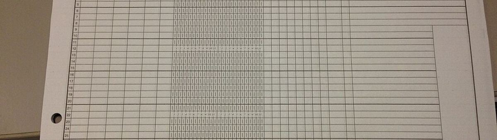

사진: Famartin · CC BY-SA 3.0어떤 문제인가
입력 X위치 · 크기 · 글자 (콜론으로 끝나나, 숫자인가 …)
→ 모델 →분류 (레이아웃)
출력 y (기대하는 답)header / question / answer / other
데이터
FUNSD · 약 17MB
Jaume, Ekenel & Thiran (2019), Form Understanding in Noisy Scanned Documents. 스캔 서식 199장 (학습 149 · 시험 50), 글 덩어리마다 header · question · answer · other 표시

무작위로 뽑은 몇 줄
| 종류 (label) | 글 |
|---|---|
| answer | 17 |
| question | cc: |
| question | : |
| question | From: |
| question | Area: |
| question | Region: |
| answer | 5 |
데이터 통계
9,529줄 (데이터 파일의 줄 수. 문제의 '한 행' 은 아래 예시에서 따로 정한다)
2열
| 열 | 종류 | 빈칸 | 고유값 수 | 범위 · 대표값 |
|---|---|---|---|---|
| label | 글자 · 범주 | 0 | 4 | 가장 흔한 값: question (45.4%) |
| split | 글자 · 범주 | 0 | 2 | 가장 흔한 값: train (76.2%) |
데이터 모양 보기
글 덩어리 종류별 개수 (199장 전체)
질문 · 답이 대부분. 제목 (header) 은 적어서 맞히기 어렵다
문제를 정해 본 예시
| ① 한 행 | 서식 속 글 덩어리 하나 (상자 + 글자) |
| ② 입력 X | 위치 · 크기 · 글자 (콜론으로 끝나나, 숫자인가 …) |
| ③ 출력 y | header / question / answer / other |
| ④ 평가지표 | 정확도 + 종류별 재현율 |
| ⑤ 기준선 | 가장 흔한 종류 |
문제를 정할 때 처음 채워 보는 칸들입니다. 여기서 끝이 아니라, 시험 데이터를 어떻게 나눌지 · 틀렸을 때 손해가 얼마인지 · 예측 시점에 정말 알 수 있는 값인지 같은 칸을 더 붙일수록 좋은 문제가 됩니다.
노트북에서 나온 결과 (기준선 vs 모델)
baseline (always 'question'): accuracy 47.1% random forest on 8 clues : accuracy 75.2%
논문 · 출처
누가, 왜, 어떻게 만든 데이터인지 직접 확인해 보세요.
이 데이터에 관심 있을 곳
- 업종
- 회계 · 감사 법인, 은행 · 보험 (서류 심사), 문서 AI · OCR 솔루션
- 직무
- 문서 AI 엔지니어, OCR · 비전 엔지니어, 감사 데이터 분석가
인턴 · 산학협력 · 프로젝트 주제를 고를 때 참고하세요 (일반적인 예시).